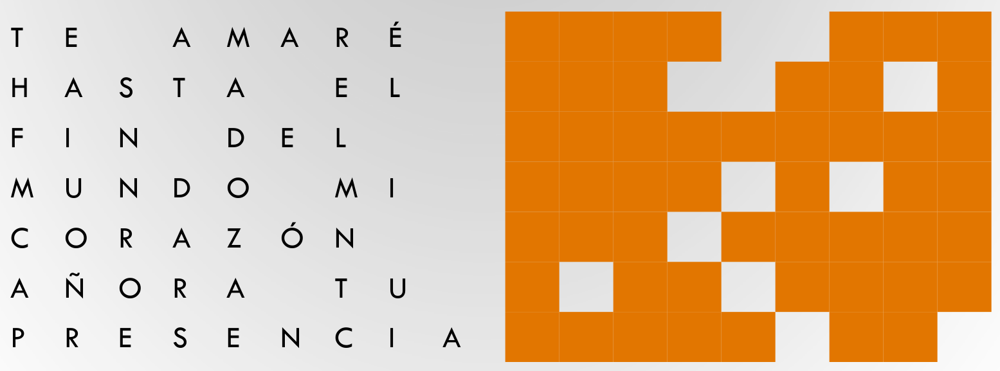
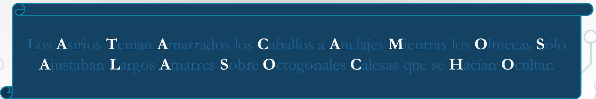

Esteganografía
Mikel Egaña Aranguren
Esteganografía
"steganos": oculto; "graphos": escritura
Ocultar información de forma que no sea “visible” para quien no sepa la clave
Sin saber la clave, puede parecer que no hay información oculta
Es la técnica precursora de la criptografía
Esteganografía
Histaiaeo (gobernador de Mileto) buscaba aliados para sublevarse contra el rey persa Dario I
Necesitaba enviar mensajes que nadie detectara
- Rapaba el pelo a los mensajeros
- Les grababa el mensaje en la cabeza
- Esperaba a que les creciera el pelo, y los mandaba al destino
- En el destino les volvían a rapar la cabeza y leían el mensaje
Esteganografía
Segunda Guerra Mundial
Los alemanes utilizaban micro puntos para ocultar información en textos, haciéndolos pasar por signos de puntuación
Esteganografía
Usando una plantilla
La clave es la forma de extraer la información

Esteganografía
Seleccionando unos caracteres determinados

Clave: primera letra de cada palabra no monosílaba

Esteganografía moderna
Insertar información sensible dentro del fichero contenedor
- Sustitución de bits
- Inserción de bits al final, después de la marca EOF (End Of File)
- Creación fichero contenedor "ad-hoc" partiendo de información a ocultar
Sustitución de bits
Ocultación de información en archivos multimedia (normalmente imágenes)
En formato BMP cada pixel en RGB son 3 bytes
LSB (Less Significant Bit): Modificar el último bit de cada byte es inapreciable
Sustitución de bits
Por ejemplo, para ocultar texto, insertamos el código ASCII del carácter deseado

Esteganografía moderna
- Normalmente mediante programas que usan contraseñas
- ¿Cómo mejorar la robustez del sistema?
- Cifrar la información antes de introducirla (Criptografía + esteganografía)
Esteganografía moderna: problemas
- Si el fichero contenedor es manipulado se puede perder la información (ej. JPEG --> BMP --> JPEG)
- No garantiza Autenticidad ni Integridad (Pero si Confidencialidad)